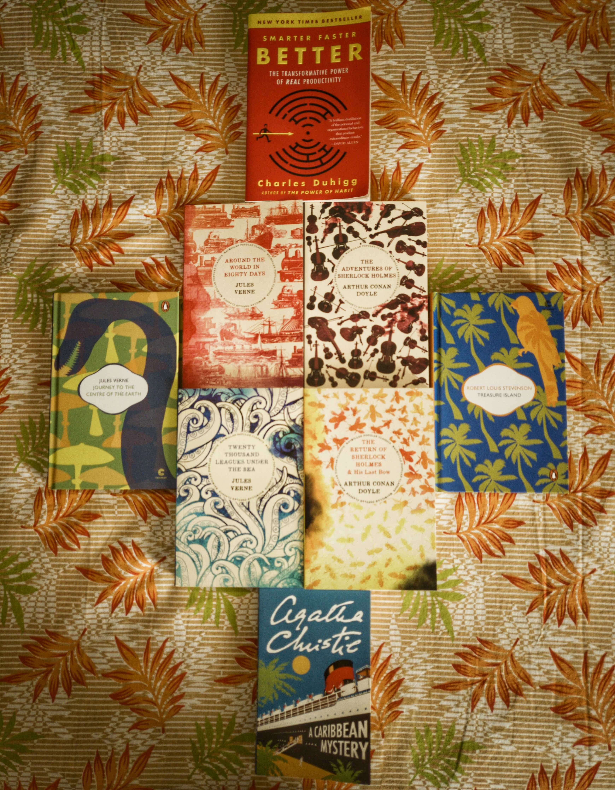

This will be a really short post. I went to a nearby book store this week and bought a few of books.

- A Caribbean Mystery - Agatha Christie
- Smarter Faster Better - Charles Duhigg
- The Adventures of Sherlock Holmes - Arthur Conan Doyle
- The Return of Sherlock Holmes - Arthur Conan Doyle
- His Last Bow - Arthur Conan Doyle
- Around the World in 80 Days - Jules Verne
- Twenty Thousand Leagues Under the Sea - Jules Verne
- Journey to the Centre of the Earth - Jules Verne
- Treasure Island - Robert Louis Stevenson
The Challenge
The challenge I have taken is to read all of these books before the end of this year. This is a stretch goal for me (even considering that I have read the Sherlock stories already) taking into account that I probably haven’t read 8 books during this whole year till now.
I am excited to see how far I can take this. Will post updates in the coming weeks here, wish me luck ✌️.
Want to wish me luck for this challenge or have anything else to discuss, then please get in touch via email or over at Twitter on @varun_barad.